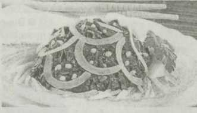

Из морепродуктов
 Капуста морская, вкусная такая…
Капуста морская, вкусная такая…
Морская капуста — целебный, оздоравливающий продукт питания, выводит из организма радиоактивные вещества и другие токсичные соединения. Поэтому необходимо ежедневно съедать по 2 ч.л. этого продукта в любом виде — соленую, консервированную, маринованную или сухую. Дома из морской капусты можно приготовить вкусные салаты, винегреты, супы, борщи и даже котлеты.
СалатНа 400 г консервированной морской капусты — 1 луковица, 4 вареных яйца, 300 г отваренной рыбы без костей, майонез.
Луковицу, яйца и рыбу мелко нарезать, соединить с капустой, заправить майонезом.
Винегрет300 г маринованной морской капусты, 300 г картофеля, 200 г моркови, 100 г репчатого лука, 200 г соленых огурцов, 100 г растительного масла, соль — по вкусу.
Картофель и морковь вымыть, отварить, очистить, нарезать ломтиками или кубиками. Лук очистить и нарезать кольцами. Огурцы нарезать кубиками. Соединить морскую капусту с измельченными овощами, заправить растительным маслом, посолить и перемешать.

300 г свежемороженой морской капусты, 300 г картофеля, 100 г моркови, 100 г репчатого лука, 600 г рыбы, 10 горошин черного перца, 2 лавровых листа, соль — по вкусу, 1,5 ст.л. растительного масла, 2 л воды.
Морскую капусту отварить 20 мин. в большом количестве воды и затем промыть холодной водой. Картофель вымыть, очистить и нарезать соломкой. Лук очистить и нашинковать. Морковь вымыть, очистить,нарезать соломкой или кружочками и спассеровать в растительном масле вместе с репчатым луком. Рыбу разделать, промыть и нарезать кусочками. Подготовленные картофель и рыбу залить кипятком, добавить морскую капусту, пассерованные овощи и варить до готовности. В конце варки положить лавровый лист и перец, посолить. При подаче на стол заправить сметаной и толченым чесноком.
Запеканка1 кг картофеля, 300 г свежемороженой морской капусты, 200 г репчатого лука, 200 г молока, 2 вареных и 1 сырое яйцо, 30 г растительного масла, соль — по вкусу.
Морскую капусту отварить и промыть холодной водой. Лук очистить, мелко нашинковать и спассеровать в растительном масле. Картофель вымыть, очистить, залив кипятком, отварить, горячим протереть через сито, добавить горячее вскипяченное молоко, посолить и перемешать до пюреобразного состояния. Половину приготовленного картофельного пюре уложить ровным слоем в смазанную маслом форму или сковороду с высокими бортиками. Отваренную морскую капусту, пассерованный лук и измельченные вареные яйца смешать, посолить и уложить на слой картофеля, равномерно разложив по всей поверхности. Сверху ровным слоем выложить оставшееся картофельное пюре, поверхность разровнять и смазать сырым взбитым яйцом. Запечь в духовке до румяной корочки.
Елена КУЗЬМИНА, г.Могилев.